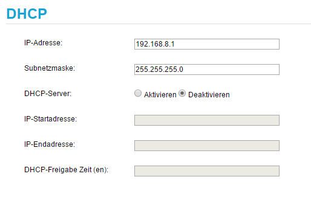

E5170 - Nach Deaktivierung des DHCP-Servers hat der Cube keine/falsche IP-Adresse
Hansjörg Rainer
Bei meinem
E5170
hab ich folgendes Problem:
Da ich den DHCP-Server auf meiner Synology-NAS laufen lassen möchte, hab ich dort den DHCP-Server konfiguriert und am
E5170
abgedreht. Sobald der Würfel nun durchgestartet wird, ist seine eigene IP-Adresse weg - zumindest komme ich nicht mehr hin (von einem PC aus, welcher eine statische IP-Adresse hat). Auch ein Anpingen ist nicht mehr möglich.
Auf der NAS am neuen DHCP-Server sehe ich, dass der MAC-Adresse des Routers eine dynamische IP zugewiesen wurde - welche aber interessanterweise auch nicht anpingbar ist.
Ich komme gar nicht mehr hin - nur mittels Reset kann ich dann erst wieder drauf und alles neu einstellen.
Nach meinem Verständnis sollte beim Deaktivieren des DHCP-Servers die dort eingetragene IP-Adresse (inkl. Subnetmask) trotzdem noch funktionieren, oder? - Eine dynamische Gatewayadresse macht ja keinen Sinn....
Fichtlwichtl
Hi!
Also kurz gesagt, ja du hast recht.
Sobald du den DHCP am Router deaktivierst, und dem Router eine IP + Subnetmask gibst, sollten diese Einstellungen auch entsprechend gespeichert bleiben und er Router mittels dieser IP erreichbar sein.
Welche IP Range verwendest du im Netzwerk?
Ist der Router direkt mit dem NAS Verbunden oder über einen Switch?
LGFW
Hansjörg Rainer
Vielen Dank für die rasche Antwort:
Gateway-IP: 192.168.8.1/255.255.255.0
dhcp-Server deaktivert (früher: 192.168.8.10 - 192.168.8.99)
statische IP-Adressen hab ich ab 100 aufwärts
die NAS hat 192.168.8.100 und hängt über einen Gigabit-Switch am Router (bzw. Netzwerk)
Mein PC hat ebenfalls eine statische IP-Adresse (192.168.8.101) und hängt auch am Switch.
Drucker, Raspi, Fernseher sind statisch.
Handys, Notebooks, etc. sind dynamisch.
DNS-Server liegt ebenfalls am NAS
Wenn ich die Einstellungen so (wie unten angeführt) übernehme und durchstarte, ist die Box nicht mehr erreichbar!

Bearbeitet
von Hansjörg Rainer
MarioM
Die statischen IP Adressen sollen über die Box gehen und die dynamischen über DHCP? Ich verstehe den Sinn des Setups noch nicht ganz.
Generell kann man ja auch statische IP Adressen vergeben, obwohl man DHCP aktiviert hat...
Bearbeitet
von MarioM
Fichtlwichtl
Ich nehme an er will einfach die Box als reines Modem nutzen und hat ihr somit eine statische IP zugewiesen. Die restlichen IPs werden vom DHCP am NAS vergeben.
Mein Setup ist relativ ähnlich, allerdings hab ich damit keine Probleme. Ich nutze IP Adressen im 192.168.88.x Bereich.
@Hansjörg Rainer
- hast du testweise mal eine andere Range versucht einzurichten? also statt dem 8.1er Netz ein z.B. 2.1er? Ich weiß, maybe ein recht "seltsamer" Ansatz... aber aus meinen Erfahrungen eine recht gute Testmöglichkeit.
LGFW
Hansjörg Rainer
@Fichtlwichtl: Ja genau so ist es - dhcp und (internen) dns übernimmt die NAS. die Box ist nur Router und Gateway.
Ich werde die Box nochmals resetten und dann als einzige Änderung DHCP deaktivieren - dann sollte der Router auf jeden Fall über 192.168.1.1 erreichbar sein.
Danke vorerst mal für den Tipp.
lg
Hansjörg
MarioM
Was hast du denn für einen Switch dazwischen hängen? Schon mal die Konfiguration von dem Switch gecheckt?
Welche Geräte kannst du denn alle pingen? Alle außer die Box?
Hansjörg Rainer
Hallo!
Ich hab am Wochenende mal einen Reset der Box gemacht und dann nur das DHCP abgedreht.
Dann funktioniert der Zugriff ganz normal (natürlich nur von den Geräten mit statischen Adressen).
Sobald ich den DHCP-Server auf der NAS aufdrehe, holt sich die Box nach einem Restart eine dynamische Adresse des DHCP-Servers - was sie eigentlich nicht tun sollte.
Muss ich auf der Box noch was einstellen, so dass die Adresse statisch bleibt?
Eventuell liegt das Problem vielleicht doch am DHCP-Server der NAS. Ich werde auch noch versuchen, dass ich am DHCP-Server die Box mittels der MAC-Adresse auf eine immer gleich bleibende IP-Adresse binden kann. Das wäre zumindest ein Workaround.
lg
Hansjörg
Fichtlwichtl
Hi Hansjörg,
nein mir ist hier keine Einstellung bekannt, die man noch ändern könnte.
Bitte gib uns kurz Bescheid, ob dein Workaround funktioniert, würde mich sehr interessieren!
Hast bzw. hattest du eventuell die Möglichkeit rein mal Testweise ein anderes Gerät als DHCP Server zu konfigurieren um zu schauen wie sich die Box mit dem anderen DHCP Server verhält?
LGFW
Chris177
Hallo,
ich darf mich seit gestern, daweil noch, stolzer Besitzer einer Internet Box nennen
Huawai E5071S-22
Nur habe ich ein ähnliches Problem so wie schon oben beschrieben; ich habe bei mir im Netzwerk alles auf den Bereich 10.0.0.XXX aufgebaut. Das Netzwerk schaut wie folgt aus ...
Internet Box verbunden mit einer Fritz Box und an der Fritzbox hängen 2 Tp link Wlan Router einer fürs OG einer fürs EG
Da ich für diverse Geräte, Backofen, IP Cam, NAS, Smart Home ... usw statische IP Adressen benötige habe ich mir das alles auf der FritzBox so eingestellt. Diese EInstellungen möchte ich wenn möglich behalten.
Somit wollte/möchte ich die Internetbox nur als "Modem" verwenden und habe den DHCP Server deaktiviert und der Internetbox eine IP Adresse im statischen Bereich der 10.0.0.XX gegeben.
Fakt ist seit dem ist die Box nicht mehr anwähl bar. Nach ca 15 Resets der Internetbox wo bei ich alle möglichen Bereich und Zusammenstellungen ausprobiert habe, stehe ich mit meinem Wissen an.
Ich verstehe nicht ganz, warum du den DHCP Server der Box abdrehen willst und die IP ändern? Wenn du eh einen Router dahinter hängen hast, der ALLES andere verwaltet.
Alles was bis zur Fritzbox geht, muss ja nicht zwingend ein 10er Netz sein ...
Chris177
Hallo Mario,
ich habe jetzt die Internetbox auf 192.168.1.1 eingestellt und ihr einen DHCP Bereich von 2 - 3 gegeben. Mir kommt es so vor dass sich einige Geräte in diesen Bereich einwählen und dass diese immer zwischen den 2 Bereich von Fritzbox und Internetbox herumhüpfen.
MarioM
Also wenn die Geräte im WLAN oder LAN der Fritzbox hängen, dann sollten sie die IP Adresse auch von dort beziehen
Das siehst du aber eh in der Admin Oberfläche - wenn dort alle Geräte drinnen sind, die du so hast, dann funktioniert das einwandfrei
Nicht dass sich ein Gerät vielleicht mit dem WLAN der HomeNet Box verbindet
Chris177
Also bis jetzt hatte ich keine Probleme dass ein Gerät von der LTE Box eine IP bekommten hätte, ABER jetzt ist ein neues Problem aufgetreten und zwar würde ich gerne einen Port weiterleiten.
Habe mich durch gegoogelt - APN auf
business.gprsinternet
und nun wollte ich im Menü "Virtueller Server" den Port weiterleiten. Nur da es sich um eine IP Adresse handelt die die LTE Box nicht kennt lässt Sie mich nicht weiter.
Weiteres Problem meine Sonos Lautsprecher hängen auch im 10.0.0XX Bereich und bekommen keine Internet-Verbindung.
MarioM
Naja normal musst du nur den Port von der HomeNet Box auf die FritzBox und von der FritzBox weiter auf dein Gerät weiterleiten - sprich du musst es auf beiden Geräten eintragen, sonst wird das natürlich nie funktionieren.
Nur die Sonos Lautsprecher, oder auch noch andere Geräte?
Lg
Chris177
Ist irgendwie klar was du da schreibst
Geht trotzdem nicht weil, die HomeNet Box nur IP Adressen im Bereich 192.168.1.XX zulässt also in Ihrem DHCP Bereich.
das Gerät, bei welchen ich den Port weiterleiten will hat die IP 10.0.0.3 der Router hat 10.0.0.6 und die Box hat 192.168.1.1
habe auch Fotos angehängt, Bitte um Hilfe.
Bei den Sonos Lautsprechern funktioniert zwar der Zugriff auf den Musikserver (NAS) aber nicht auf die Internetradios egal ob der Sonos fix verkabelt ist oder im Wlan hängt.
Ehm, wenn du den Router an der Box ansteckst, dann musst der einen IP Adresse im DHCP Bereich der HomeNet Box bekommen
Sonst hast du irgendwas falsch angesteckt ...
Was steht denn auf der FritzBox bei der WAN Verbindung? Dort solltest du vermutlich von der HomeNetBox eine IP Adresse bekommen und alle anderen Geräte hinter der FritzBox haben dann natürlich die 10er Adresse
gs1969
Ein Jahr später zu Doku-Zwecken für Hilfesuchende.
Ich hatte exakt dasselbe Problem mit der E5170 Box wie von Hansjörg im Eingangspost beschrieben. Sobald DHCP deaktiviert, war das Ding nicht mehr erreichbar.
Mir unverständlich ist auch, warum der Menüpunkt für DHCP unter "WLAN" untergebracht ist, der Würfel hat ja auch einen Ethernet-Anschluß und lässt sich auch ohne WLAN betreiben. Ich habe mir damit geholfen, einen zusätzlichen Firewall-Router mit Ethernet und WLAN an den E5170 zu stöpseln. An diesem hängen nun alle Clients in einem eigenen Netz, für das ein Raspberry Pi stromsparend DHCP und DNS macht.
Konfiguration:
E5170: dyn. public IP am WAN interface, 192.168.0.1/24 am LAN interface
Router: 192.168.0.2/24 am WAN interface, 192.168.1.1/24 am LAN interface
Durch die Netzaufteilung kann ich den DHCP auf der E5170 Box laufen lassen, so kratzt das keine der anderen Geräte.
Für die Public IP brauchts übrigens nach wie vor (05/2018) den APN "business.gprsinternet", Benutzername "t-mobile", Passwort "tm".
Einzutragen unter "Verbindungsaufbau" -> "Profilverwaltung".
Cheers,
Gerfried
MarioM
Am 5/5/2018 um 14:04 schrieb gs1969:
Mir unverständlich ist auch, warum der Menüpunkt für DHCP unter "WLAN" untergebracht ist, der Würfel hat ja auch einen Ethernet-Anschluß und lässt sich auch ohne WLAN betreiben
Nachdem du nur einen Port hast macht DHCP irgendwie keinen Sinn oder?
Am 5/5/2018 um 14:04 schrieb gs1969:
Ich habe mir damit geholfen, einen zusätzlichen Firewall-Router mit Ethernet und WLAN an den E5170 zu stöpseln
Das rate ich auch immer wieder - erspart viele Troubles und bringt viele Vorteile
{kind=link}
{kind=link}